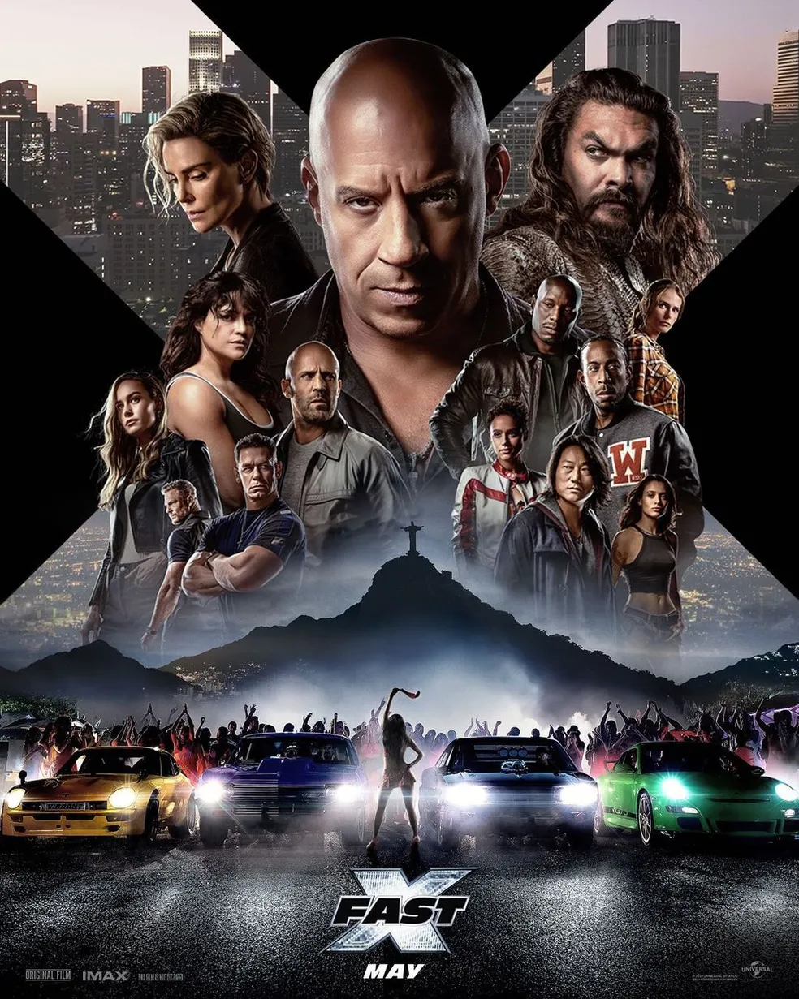
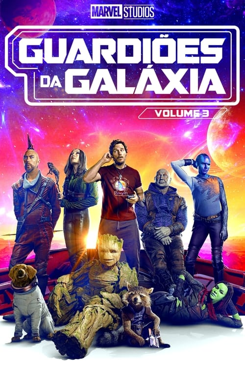
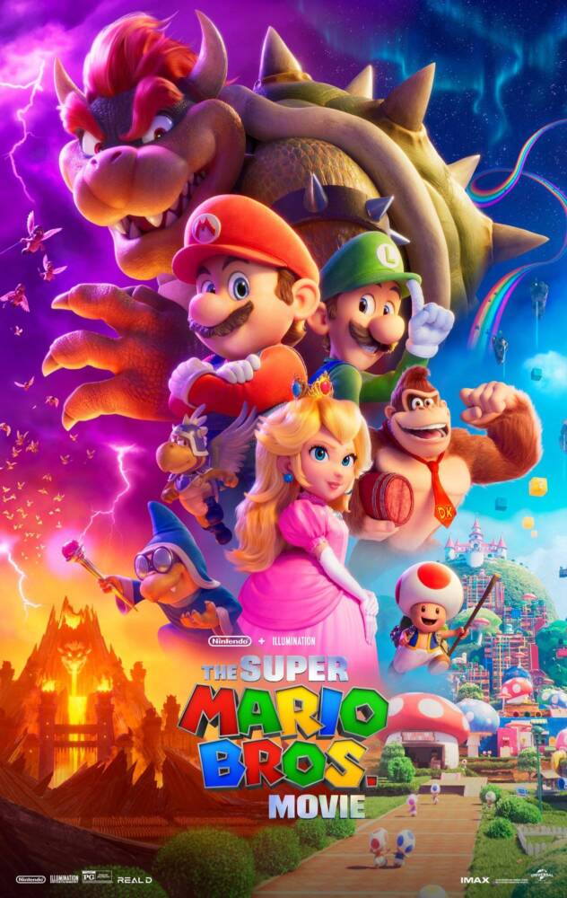
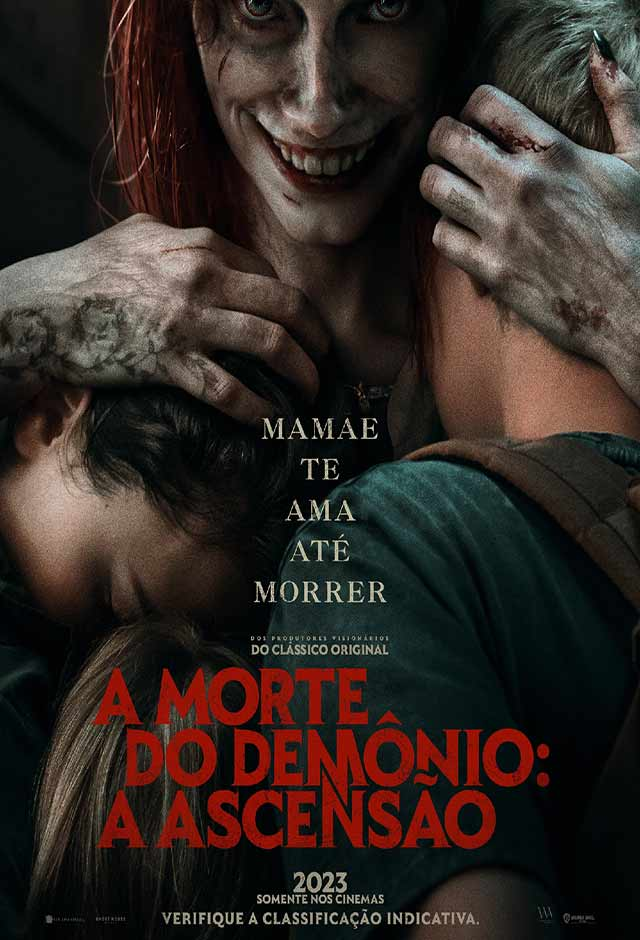
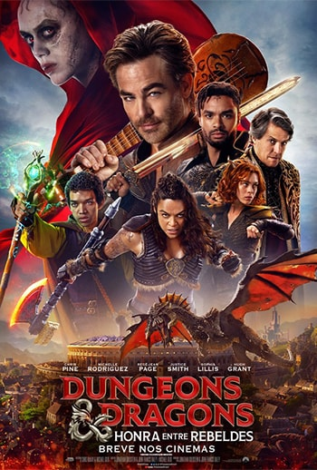
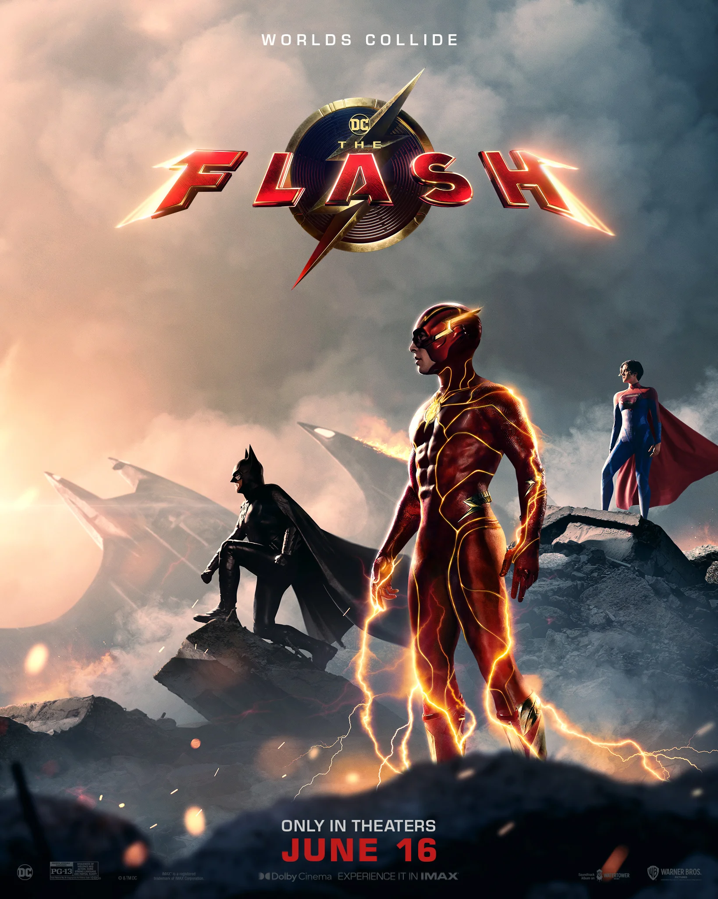
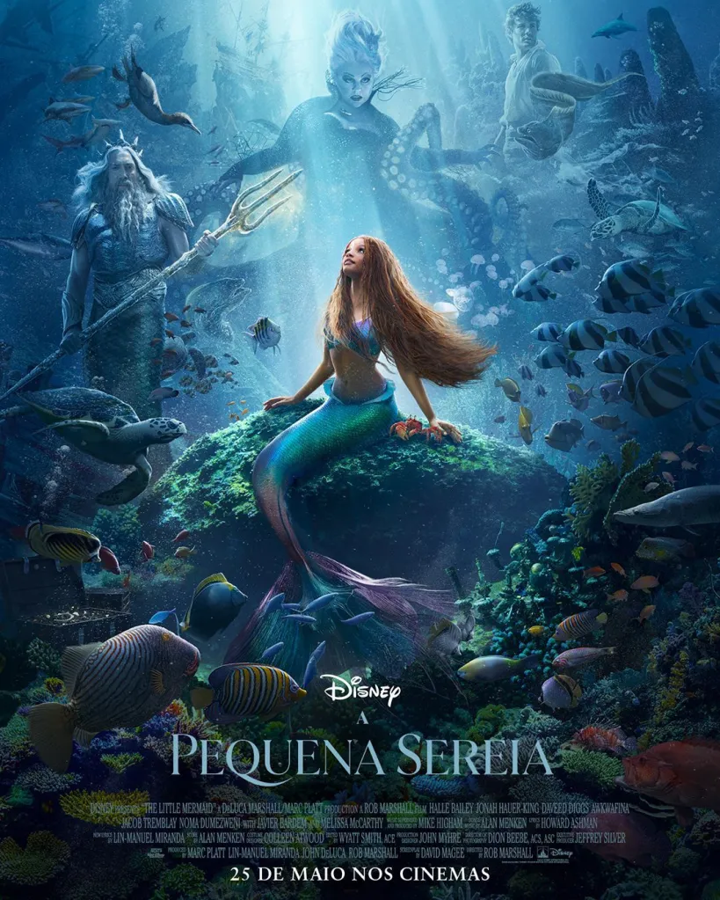
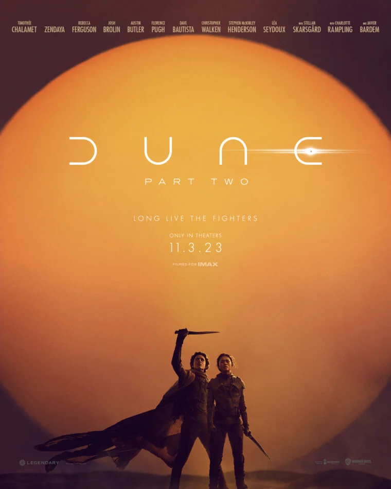

Início
Sobre nós
Contato
Encontre o seu próximo filme pelo gênero:
Ação
Aventura
Comédia
Drama
Ficção Científica
Romance
Suspense
Terror
Filmes em cartaz:

Velozes e Furiosos 10

Guardiões da Galáxia Vol. 3

Super Mario Bros - O Filme

A Morte do Demônio - A Ascensão

Dungeons & Dragons: Honra Entre Rebeldes
Em breve nos cinemas:

The Flash

A Pequena Sereia
Barbie

Duna: Parte 2
Jogos Vorazes: A Cantiga dos Pássaros e das Serpentes